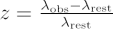
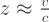
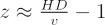

Laboratory experiments here on Earth have determined that each element in the periodic table emits photons only at certain wavelengths (determined by the excitation state of the atoms). These photons are manifest as either emission or absorption lines in the spectrum of an astronomical object, and by measuring the position of these spectral lines, we can determine which elements are present in the object itself or along the line of sight.
However, when astronomers perform this analysis, they note that for most astronomical objects, the observed spectral lines are all shifted to longer (redder) wavelengths. This is known as ‘cosmological redshift’ (or more commonly just ‘redshift’) and is given by:

for relatively nearby objects, where z is the cosmological redshift, λobs is the observed wavelength and λrest is the emitted/absorbed wavelength.
Caused solely by the expansion of the Universe, the value of the cosmological redshift indicates the recession velocity of the object, or its distance. For small velocities (much less than the speed of light), cosmological redshift is related to recession velocity ( v ) through:

where c the speed of light. At larger distances (higher redshifts), using the theory of general relativity gives a more accurate relation for recession velocities, which can be greater than the speed of light. Note this doesn’t break the ultimate speed limit of c in Special Relativity as nothing is actually moving at that speed, rather the entire distance between the receding object and us is increasing. This is a complex formula requiring knowledge of the overall expansion history of the universe to calculate correctly but a simple recession velocity is given by multiplying the comoving distance (D) of the object by the Hubble parameter at that redshift (H) as:

Credit: NASA/JPL-Caltech
Although cosmological redshift at first appears to be a similar effect to the more familiar Doppler shift, there is a distinction. In Doppler Shift, the wavelength of the emitted radiation depends on the motion of the object at the instant the photons are emitted. If the object is travelling towards us, the wavelength is shifted towards the blue end of the spectrum, if the object is travelling away from us, the wavelength is shifted towards the red end. In cosmological redshift, the wavelength at which the radiation is originally emitted is lengthened as it travels through (expanding) space. Cosmological redshift results from the expansion of space itself and not from the motion of an individual body.
For example, in a distant binary system it is theoretically possible to measure both a Doppler shift and a cosmological redshift. The Doppler shift would be determined by the motions of the individual stars in the binary – whether they were approaching or receding at the time the photons were emitted. The cosmological redshift would be determined by how far away the system was when the photons were emitted. The larger the distance to the system, the longer the emitted photons have travelled through expanding space and the higher the measured cosmological redshift.